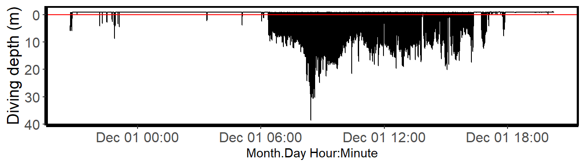

install.packages("devtools")
devtools::install_github("MiriamLL/spheniscus")spheniscus
A package that provides functions to clean the TDR data and to obtain diving parameters from the sampled individuals.
Intro
El objetivo de este paquete es: - Hacer disponibles datos crudos de TDR para que se familiaricen con el formato. - Ayudarte a limpiar los datos de TDR para obtener parámetros de buceo de los animales muestreados.
Instrucciones en ingles: https://github.com/MiriamLL/spheniscus
Instalación
El paquete estará disponible solo por GitHub
library(spheniscus)Datos
TDR_raw
Agrega los datos crudos como objeto.
TDR_raw<-TDR_rawLas columnas no están separadas ya que primero hay que cortar partes del archivo.
TDR_dives
Incluye todos los buceos durante el viaje.
TDR_dives<-TDR_divesFunciones
extract_rawdata
Extrae la información de profundidad de los datos crudos de los dispositivos.
En los dispositivos TDR (Cefas G5+) la presión se empieza a medir después de ‘Data Block 1’ y termina de medir presión cuando empieza ‘Data Block 2’. Estos nombres fueron usados como separadores en row_start y row_end. Si tu dispositivo usa otros separadores como por ejemplo ‘Data Block 0’ hay que ajustar acorde.
TDR_pressure<-extract_pressure(data=TDR_raw,
row_start='Data Block 1',
row_end = 'Data Block 2')extract_trip
Corta periodos de tiempo de acuerdo a nuestro interés.
La información se obtuvo de dispositivos GPS, trip_start es cuando salieron de la colonia y trip_end cuando regresaron.
Los datos fueron recortados para incluir sólo información durante el viaje de alimentación.
TDR_trip<-extract_trip(data=TDR_pressure,
timeformat="%d-%m-%Y %H:%M:%S",
trip_start="30-11-2018 20:43:24",
trip_end="01-12-2018 20:16:19")plot_depth
Crea un grafico con el perfil de buceos. Marca el cero con una linea roja.
El objetivo de este gráfico es que te permita decidir si debes corregir el cero.
plot_depth(TDR_trip = TDR_trip,
depth_column='Pressure',
time_column='daytime')
Citar
- Lerma, M (2021). Package spheniscus (Version v1.0). Zenodo. http://doi.org/10.5281/zenodo.4709837